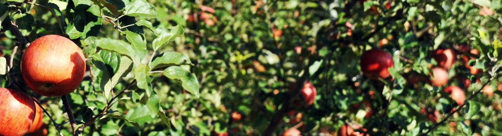
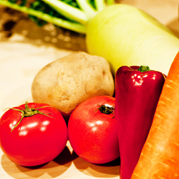
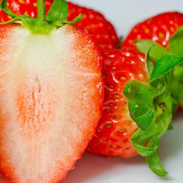
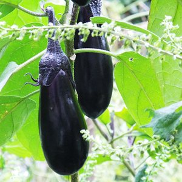
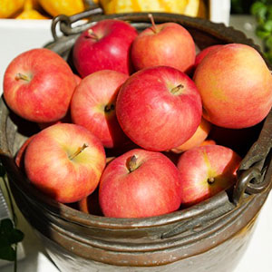
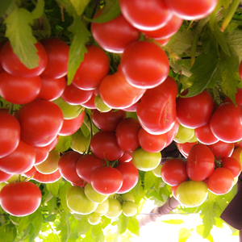
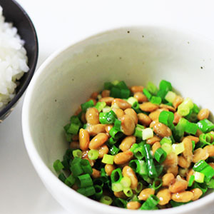
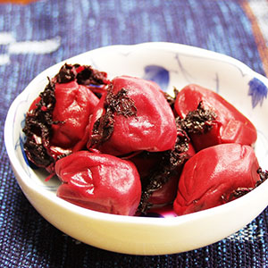
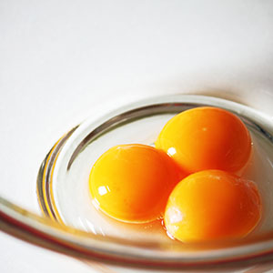
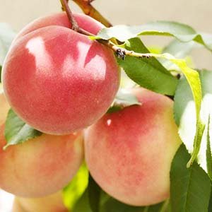

ホーム
ログイン
カート
お米
ひのひかり（白米）
ひのひかり（玄米）
合鴨米（白米）
合鴨米（玄米）
ごはんのお供
うめぼし
自然たまご
手作り納豆
野菜
野菜セット
トマト
なす
にんじん
じゃがいも
ほうれんそう
さといも
ごはんのお供
りんご
もも
なし
いちご
SNS
instagram
facebook
twitter
blog
ガイド
コンタクト
会社概要
Natural Food Store（無農薬食品店）
ログイン
カート
* home
ホーム
* blog
ブログ
* shopping
お買い物
* guide
ガイド
* contact
お問い合わせ
* about us
会社概要

concept
Natural Food Storeでは
農薬や化学肥料を一切使わず
有機栽培ではなく自然栽培をしています
安心・安全な食にこだわり
からだに優しい食材をお届けいたします

大人気!
旬野菜の詰め合わせ

甘くて
おいしい
あまおう?

ポリフェノール
たっぷりなす

甘味と香りの
ふじりんご
?
新じゃがの
季節です

糖度が高く
栄養価も高い
トマト?

ごはんのお供
手作り納豆
釜焚きすれば
さらに美味しい
自然米?

丹精込めて
生梅から漬けてます

栄養価の高い
自然たまご
?
定期購入者一番人気
アイガモ農法米

果汁たっぷり
ジューシー
白鳳?